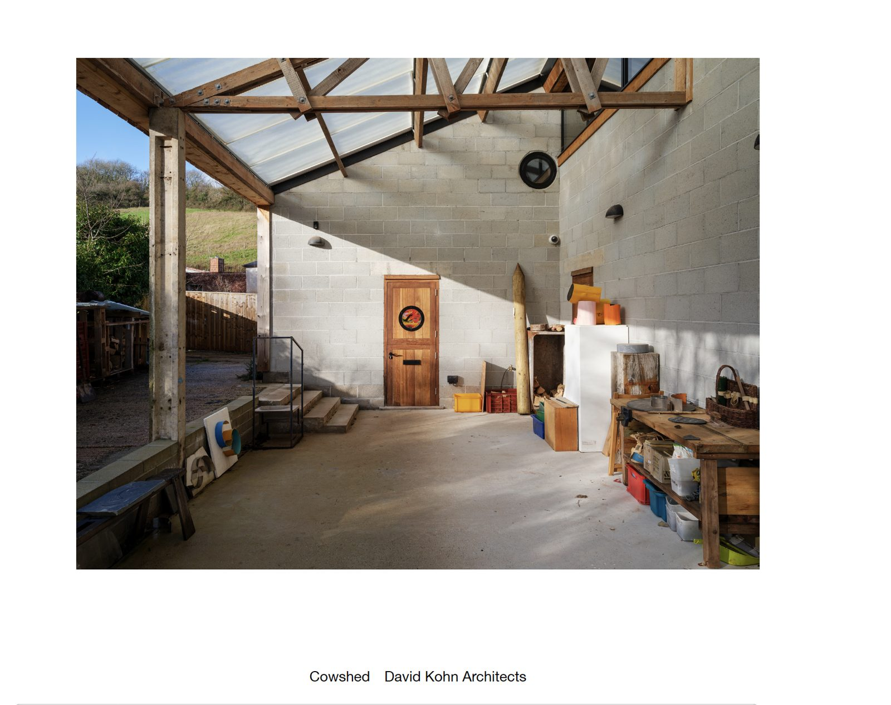
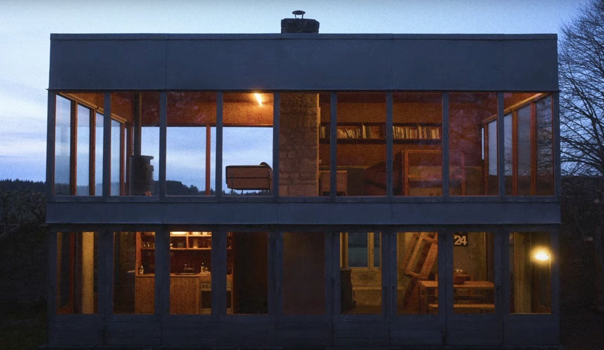
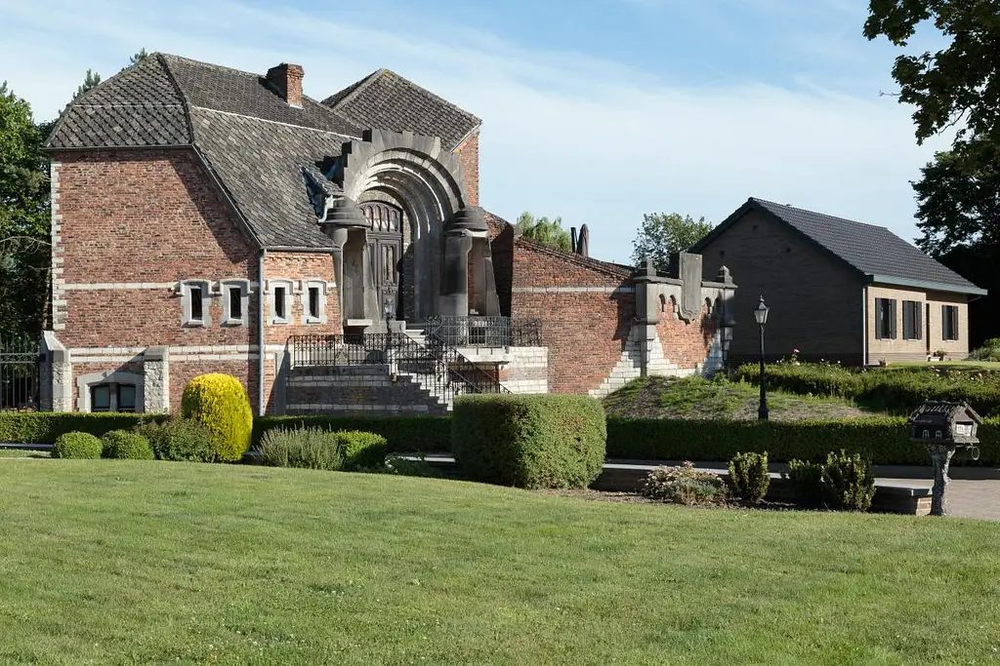
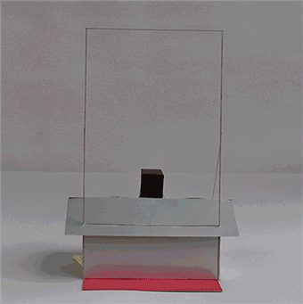
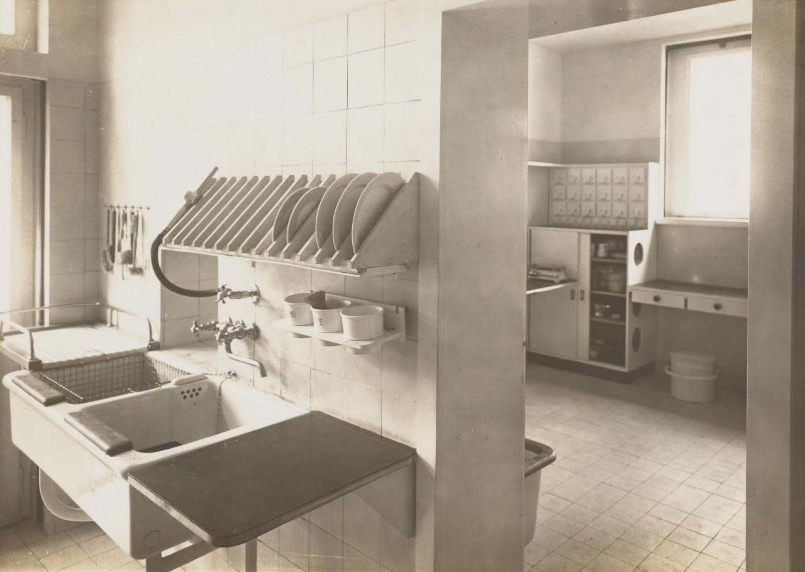
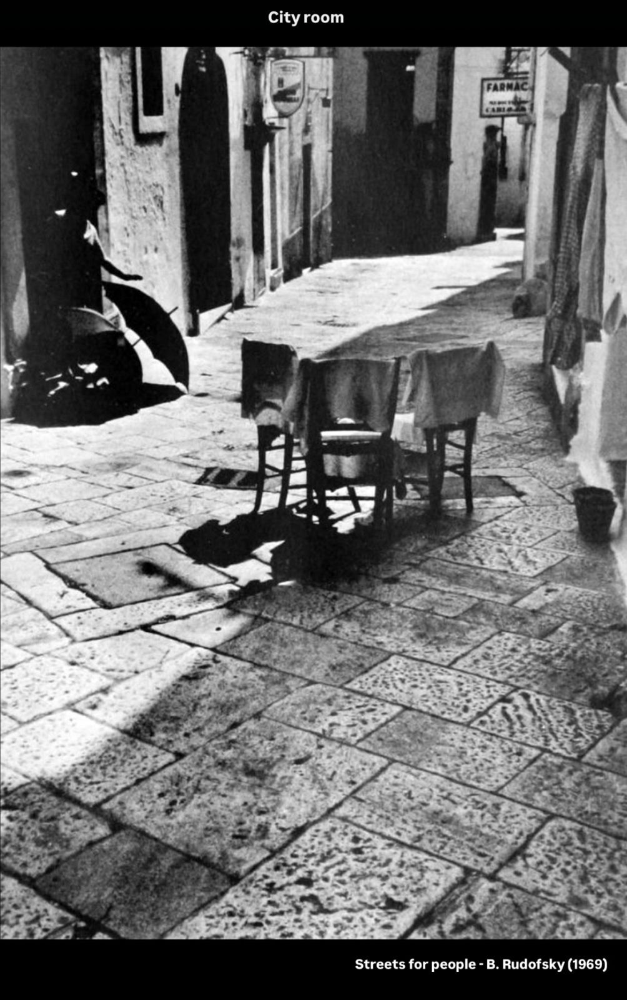
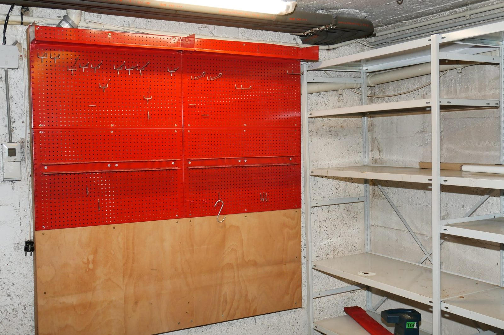
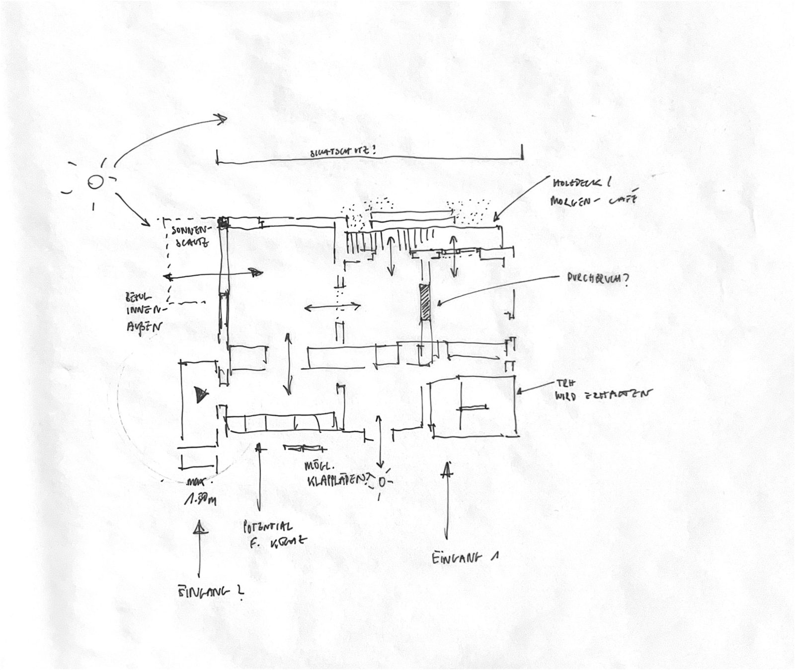
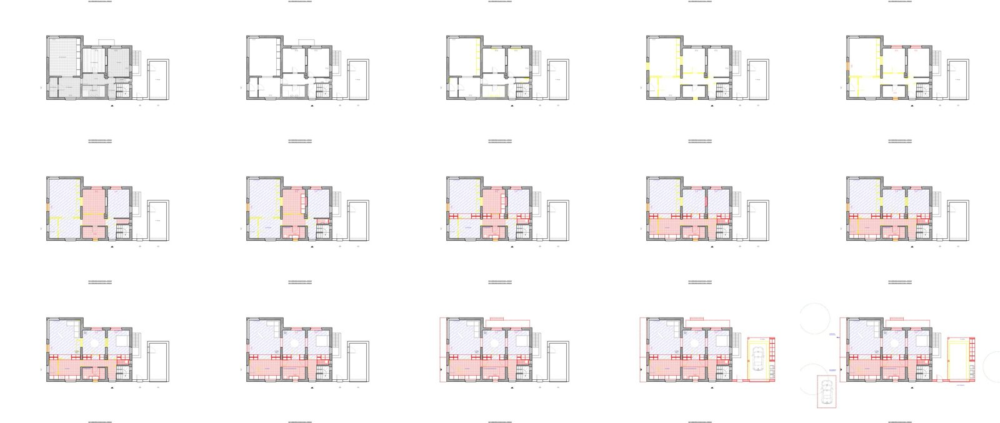
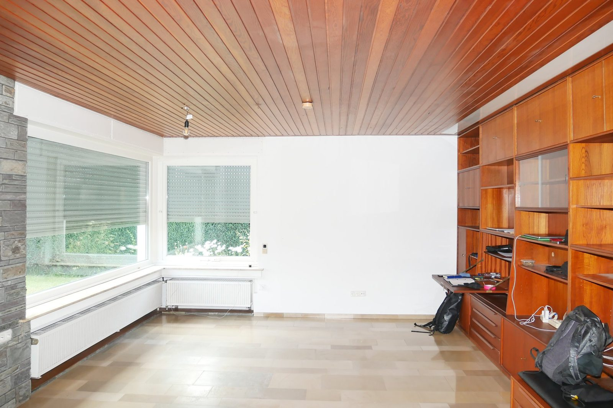

über
etcetera ist das Arbeitsarchiv von Christian Sternhagen und Jonathan Burkard. Es fragt, wie sich Menschen, Orte, Ideen und vorhandene Ressourcen zu Architektur verbinden lassen. 2026 begann es als Ablage für den Umbau eines Hauses von 1953 in Aachen-Kornelimünster und wächst seitdem mit jedem Projekt, jedem Fund und jeder Frage, die sich ein zweites Mal stellt.
impressum
Jonathan Burkard
Christian Sternhagen
Driesener Straße 67
10439 Berlin
archundkrach@gmail.com
darstellung
automatisch: von 9 bis 18 Uhr hell, sonst dunkel
Ein offenes Archiv aus der laufenden Arbeit an Architektur: Protokolle, Normen, Referenzen, Material, Werkzeuge und Orte, so wie sie im Projekt anfallen, und die Verbindungen zwischen ihnen.
Nichts davon ist fertig. Der Alltag steht neben dem Entwurf, das Vorgefundene neben dem Neuen, das Eigene neben dem, was andere gebaut und geschrieben haben.
Füge es von links aus dem Fundus in deine eigene Sammlung.
Links eine Liste, den Graphen oder die Tafel wählen.
texte 7
x-v-011Das Unbehagen in der Formvortrag
- autor
- M. O. Zitzelsberger
Ich möchte im Folgenden mein Glück versuchen, um diesem Ihrem Thema der Form ein kleines Stück näherzukommen. Ich fürchte allerdings es wird mir nicht gelingen. Ich streife dazu 3 Projekte. Auf eines werde ich intensiver eingehen. Das ist das Wartehaus in meiner Heimatstadt Landshut. Dieses kleine Bauwerk ist gar nicht ganz leicht zu beschreiben. Es lassen sich verschiedene Wahrheiten darüber erzählen. Beispielsweise die Geschichte, die vor allem in konservativen und kulturpessimistischen Kreisen gut ankommt: „Das Warte Haus ist eine Reminiszenz an alle metallischen Objekte unserer Städte des 19. Jahrhunderts, denen der Funktionalismus die Gestalt ausgetrieben hat. Damit gemeint sind all die wundervollen Geländer und Balustraden, die kleinen Toilettenhäuser, Litfaßsäulen, Trambahnstationen, Blumenkioske und Straßenlaternen. So manche schaut mit großer Traurigkeit auf die Möbel unserer Städte. Es sind die langweiligen Werbetafeln, die nichtssagenden Abfalleimer, Urinale oder eben die belanglosen Wartehäuser für Busse und Trambahnen. Sie alle verbindet eine große gestalterische Leere. Dabei könnten wir vom 19. Jahrhundert so viel lernen. Es hat mit großem Elan das Handwerk gefeiert und war doch geprägt von der Industrialisierung wie kein Jahrhundert zuvor. Die Konstruktion der Haltestelle und des Uhrenturms ist aus Metall. Die Eckstützen sind Fertigprofile mit angeschweißten Bauteilen. Die Zwischenstützen sind aus Metallplatten gelasert. Die Details der gewählten Konstruktion erinnern an die klassischen „Bunde“ im Schmiedehandwerk oder die Nieten alter Eisenbrücken. Die Farbe ist ein Eisenglimmerlack, mit dem Pinsel aufgetragen. Es zeigen sich somit Spuren der Hand, die in ihrem ungleichmäßigen Duktus der Konstruktion Leben einhauchen. Hochindustrialisierte Methoden und solche des klassischen Handwerks sollen hier zu einer Einheit verschmelzen und dem prominenten Platz der mittelalterlichen Stadt Landshut wieder ein bisschen urbane Noblesse zurückgeben.“ (1) Soweit diese Version einer Beschreibung. Es gibt aber noch eine andere Wahrheit, die hier indirekt schon zum Ausdruck kommt: Das Wartehaus war eben auch ein Exempel, um der durch und durch modernistischen, etwas festgefahrenen zeitgemäßen niederbayerischen Avantgarde wirkungsvoll etwas entgegenzuschleudern. Der Uhrenturm tut das seinige dazu. Er zeigt die Zeit an auf eine möglicherweise ganz unzeitgemäße Art und Weise. Natürlich gab es auch ganz praktische Gründe, die mich zu dieser Form gebracht haben: Das kleine Bauwerk sollte leicht sein, einsehbar und beständig. Der Denkmalschutz war überraschenderweise angetan von dieser Sprache, die sich so gar nicht abheben will von ihrer Umgebung. Material, Physik, Konstruktion, Funktion, Programm, Budget, Ort, Tradition und Geschichte beeinflussen die architektonische Form. Es ist aber selbstverständlich, dass diese Faktoren nicht genau die eine Konstruktion, die eine Form, das eine Bauwerk bedingen. Am Ende gibt es eben noch einen anderen Aspekt bei der Gestaltgebung. Es ist der Formwille. Dieser hängt zum Teil mit den genannten Faktoren zusammen. Aber nicht nur. So wohnt jedem Gebäude, das auf Grund äußerer Umstände geformt wurde, am Ende auch ein Teil von uns selbst inne. Doch was ist das genau? Im Falle des Wartehauses war es eben ein Stück weit Protest. Es war aber auch eine Hommage an den großen Formenreichtum der europäischen Stadt und ihrer Baugeschichte: Die Stadt als Buch zu verstehen, in dem man lesen kann, welches aber kein Ende hat, stetig weitererzählt werden kann. Architektur als Sprache zu begreifen, die sich entwickelt, die aber stets auf unveränderbaren Elementen und Strukturen, im Sinne von Begriffen und Grammatik, aufbaut. So schreibt Adolf Behne in seinem Werk „Die Stile Europas“ und dem darin befindlichen Kapitel zum Palazzo Strozzi den wie ich finde sowohl denkwürdigen als auch fragwürdigen Satz „Die Renaissance wurde ein allgemeiner europäischer Stil, ja ein Stil aller Kontinente – Beweis, daß er Elemente enthalten muß, die allgemein menschlich sind.“ (2) Wenn ich eingangs bei der Beschreibung des Wartehauses der Wirkung halber den nicht abstreitbaren sarkastischen Unterton in diesem Bauwerk betont habe, so will ich hier meine Liebe für die europäische Stadt überhaupt nicht leugnen. Und genau an dieser Stelle begann ich irgendwann nach Fertigstellung immer mehr zu zweifeln. Und das hängt auch mit dem oben zitierten Satz von Behne und der damit verbundenen weitverbreiteten Überzeugung, jene Annahme sei uneingeschränkt wahr, zusammen. Es beschlich mich mehr und mehr das dumpfe Gefühl, dass in diesem wunderschönen Repertoire an Formen, die unsere Städte bedingen, eventuell versteckte Botschaften gespeichert sind, die uns nicht weiterbringen. So ist doch dieses Erbe unserer Architekturgeschichte, dieser große Reichtum an Formen, nicht ganz unabhängig von den Machtstrukturen jener Zeit, von Hierarchie und Gehorsam, von Unterdrückung und Gewalt. Katharina Hacker schreibt in ihrem wundervollen Roman „Tel Aviv – Eine Stadterzählung“: „Eine Wohnung ist eine Wohnung. Aber sie ist unberechenbar. Jederzeit kann sie boshaft werden. Sie kann Ameisen ausspucken, Wasser, einen toten Fisch und Leitungen wie die verfaulenden Eingeweide des Hauses, und sie wird auf den Augenblick warten, in dem Du gänzlich ungeschützt bist. Alles Gift deiner Vorgänger hat sie aufgespeichert. Krank gewesen. Ein Streit. Die Milch verschüttet. Einen Spiegel zerbrochen. (…) Ohne Unterlaß rieselt Staub von Wänden und Decke. (…) Die Sätze beginnen mit ihrem vorzeitigen Ende.“ (3) Die Frage, ob sich in unseren Bauwerken geschichtliche Ereignisse und Entwicklungen eingeschrieben haben, muss hier offenbleiben. Doch findet sich nicht in dem was nicht gesagt wurde manchmal mehr als im Gesagten? Verstecken sich die wesentlichen Elemente der Form viel mehr im nicht Geformten? Marie Luise Kaschnitz stellt in einem ihrer Gedichte eine „Ungenaue Beschreibung“ (4) fest und meint, man hätte „Nicht gesagt - Was von der Sonne zu sagen gewesen wäre (…) Weggelassen das Morgenrot - Nicht gesprochen vom Sämann - Und nur am Rande vermerkt - Den Hahnenfuß und das Veilchen. (…) Den Verfall nicht geleugnet - Und nicht die Verzweiflung“ (4) Ist also die Form schließlich eine solche „Ungenaue Beschreibung“ (4) wie Marie Luise Kaschnitz meint? Auch wenn wir nur ungerne darüber sprechen, so müssen wir uns insgeheim doch eingestehen, dass in jeder Form immer auch ein Teil unerklärlich, nicht greifbar bleibt. Damit meine ich nicht den viel beschworenen Genius. Auch nicht den Zufall. Damit meine ich viel mehr eine metaphysische Dimension, die ich im Titel meines Redebeitrags mit dem Begriff „Unbehagen“ versuche zu umschreiben. Pathetisch gesprochen: „Das Mysterium der Form“ Hinter jeder Säulenordnung steht eine Ordnung, hinter jeder Gliederung eine Hierarchie. Das heißt nicht, dass sich eine politische Haltung bereits an der Form ablesen lässt. Und dennoch ist keine Form ganz frei von Symbolik, von Politik und von Macht. Judith Butler geht in ihrem Buch „Gender Trouble“ davon aus, dass der Diskurs den Körper beeinflusst. Die Frage ist, in wie weit sich dies auf den architektonischen Körper und seine Form übertragen lässt. Die deutsche Übersetzung des Buchtitels heißt „Das Unbehagen der Geschlechter“ (5) und spielt auf ein Werk Sigmund Freuds an, welches nun durch erneute Referenzierung meinerseits hier auch indirekt zur Sprache kommt (6). Was mit einem leisen Zweifel begann ist am Ende tatsächlich ein Gefühl des Unbehagens geworden, das sich in meinem beruflichen Alltag festgesetzt hat. In diesem Unbehagen der Form, steckt auch Unsicherheit. So bin ich immer wieder beeindruckt, wenn ich anderen Kolleg*innen bei der Vorstellung ihrer Arbeit zuhöre. Manche scheinen ihrer Sache voll-kommen sicher zu sein. Zumindest ist das mein Eindruck. Florian Fischer hat in diesem Hause vor langer Zeit einen Vortrag gehalten. Sein Titel beschreibt dieses Gefühl vielleicht am besten: „Als wüssten wir was wir tun.“ (7) Wenn Sie erlauben zeige ich hier ein Beispiel, an dem wir gerade arbeiten: Es ist, wenn man will, ein „Wartehaus 2.0“, diesem Bauwerk typologisch jedenfalls sehr ähnlich und soll ebenfalls in Landshut entstehen. Es handelt sich dabei um ein kleines Dach für Fahrräder. Ein banales Gerüst aus aneinandergereihten Böcken mit Satteldach bildet das Skelett dieses Bauwerks, welches dann mit nur wenigen aber zielgerichtet positionierten Architekturelementen angereichert wird. Das sind PV-Module, Wandelemente oder vergitterte Rahmen, die zum Teil rein funktionale Aufgaben übernehmen, z.B. Energiegewinnung oder Schutz der Fahrräder bzw. der Nutzer*innen, zum Teil aber auch räumlich wirksam werden. Mit Dekonstruktivismus im eigentlichen Sinne haben diese Entwürfe nichts zu tun. Und doch vermögen es die gerade beschriebenen addierten Fragmente und Anhängsel jenes banale Skelett, das rein statischen, wirtschaftlichen und funktionalen Bedingungen unterworfen ist, zu destabilisieren. Man hat das Gefühl, das Bauwerk ist im Zerfall begriffen, explodiert gerade. Auch hier sind noch Motive der Architekturgeschichte erkennbar: Der Tempel und seine Elemente wie eine Schildwand als Giebelfeld bzw. als abstrahierter Tympanon, eine HEA-Stütze als Säule, eine Kopfplatte als Kapitell, etc. Den Begriff „Dekonstruktion“ verwende ich hier sehr frei, nehme für mich an, er sei weit gefasst. So will ich auch schon die Ver- fremdung darunter subsumieren, gewissermaßen als erste Stufe der „Zerstörung“. Unsere Foam Furniture Series mag hier als Beispiel dienlich sein. Sie bezieht sich ohne ein Blatt vor den Mund zu nehmen auf die italienische Postmoderne, auf Sottsass um es genau zu sagen, nimmt deren Geschichtsbezüge in Form von Basis und Schaft auf, ver-fremdet sie aber, beispielsweise durch dieses fast schwerelose Material aus extrudiertem Polystyrol, welches die ursprüngliche Idee der Säule, nämlich der von Masse und Gewicht, schamlos hintergeht, Tek-tonik ad absurdum führt. Dekonstruktion ist wie ich denke kein junges Phänomen der Architekturgeschichte. Wenn wir so wollen war der Manierismus ein früher Vorbote dieser produktiven Zerstörung. Der Manierismus sprengt vertraute Ordnungen, destabilisiert Rhythmen. Dies aber war keine Dekonstruktion der Macht. Im Gegenteil. Es diente der Festigung derselben. Und dennoch: Bestehende Kategorien zu erschüttern, zu verzerren, aufzulösen. Das also interessiert uns. Der Manierismus dekonstruiert die Renaissance. Der Klassizismus den Barock. Jede Generation dekonstruiert die vorhergehende, jede Gruppe die andere. Sie alle kennen den schönen Satz: „Jedes Werk ist die Kritik am anderen Werk.“ oder anders: „Das Nichtgebaute ist die Kritik am Gebauten.“ Ist am Ende alles Dekonstruktion? Ist am Ende alles Form? Es gibt einen gewaltigen, um nicht zu sagen gewalttätigen, Satz von Nietzsche, der einem die Wahrheit nicht nur ohne ein Blatt vor den Mund zu nehmen, sondern viel mehr ohne Rücksicht auf Verluste brutal ins Gesicht schmettert. Dieses vielleicht gar toxische Wort, bringt aber doch auch den traumatischen Kern des 20. Jahrhunderts mit einem Schlag auf den Punkt und will sagen: „Was nicht ist, das kann nicht wollen.“ (8), anders gesagt “Du kannst nicht nicht wollen.” Das heißt dann in meinen Augen aber auch: Du kannst nicht nicht entscheiden. Du kannst nicht nicht entwerfen. Du kannst nicht nicht gestalten. Du kannst nicht nicht formen.
Anmerkungen
- (1) Zitzelsberger M O: Beschrieb vom Warte Haus in Landshut. 2018
- (2) Behne A: Die Stile europas - Von den Griechen bis zum Ausgang des Barocks. Berlin: Deutsche Buch-Gemeinschaft 1968.
- (3) Hacker K: Tel Aviv - Eine Stadterzählung. Frankfurt am Main: Suhrkamp 1997.
- (4) Kaschnitz M L: Gesammelte Werke. Hrsg. v. Chr. Büttrich und N. Miller. Frankfurt am Main: Suhrkamp 1985.
- (5) Butler J: Das Unbehagen der Geschlechter. Frankfurt am Main: Suhrkamp 1991.
- (6) Freud S: Das Unbehagen in der Kultur. Wien: Internationaler Psychoanalytischer Verlag 1930.
- (7) Fischer F: Als wüssten wir, was wir tun. Gastvortrag am Lehrstuhl Grundlagen des Entwerfens RWTH Aachen 2011.
- (8) Nietzsche F: Also sprach Zarathustra - Zweiter Teil. Das Grablied - Von der Selbst-Überwindung. Chemnitz: Ernst Schmeitzner Verlag 1883.


x-v-009Collective Learningvortrag
- autor
- Theresa Zschäbitz
- datum
- 2024-12-19
This text is based on Theresa Zschäbitz’s presentation at Science Day 2024, “ALLIANCES,” organized by the Junior Professorship Act of Building at RWTH Aachen University. During the event, Zschäbitz joined Axel Sowa (moderator), James Binning (ASSEMBLE), and Angelika Hinterbrandner (kontextur) to discuss the topic “Collective Learning”:
In recent years, there has been a notable rise in practices structured as collectives and collaborations, especially in creative fields. These innovative frameworks have achieved remarkable success, reshaping architecture and its methodologies. However, one area where this shift has been slower is in educational institutions, particularly universities. Universities, bound by bureaucratic processes and long-standing traditions, often resist changing their inner structures and processes. How to adopt and integrate new, collaborative approaches into their educational systems? This Science Day discussion aimed to explore the transformative potential of collaborative structures and their role in shaping the future of education which is now visibly happening parallel across recognized Universities Europe-wide. The interexchange of Universities with each other can foster solving architectures urgent need for change of practice by collaboration in research and teaching alike and interlinked.
The HORST Anthill Pavilion in Asiat Park, Vilvoorde, Belgium, which Zschäbitz presented as a case study was created for the Horst Arts and Music festival. Designed to house Artist Afrah Shafiq’s video game installation ‘Where the Ants Go’ and the pavilion results from a collaboration between Afrah Shafiq, the RWTH Aachen University’s Junior Professorship “act of building” (aob), BC Materials, and architect Jeremy Waterfield. The pavilion which was considered as a test design for BC Materials compressed earth blocks, also offered the opportunity to try reed as a façade material. Built by 45 RWTH students over two weeks, it showcases innovative, sustainable building practices in combination. The pavilion embodies a forward-thinking approach to architecture, merging vernacular techniques with new and rediscovered materials to create an expressive design that reflects future possibilities for sustainable construction while teaching students and professionals the material specific craft techniques during its construction.
Aobs Pavilion construction project at HORST Festival was a broad collaboration with different institutions and people, the course content of our summer terms Master researchfield and elective and taught by my colleague Bregt Hoppenbrouwers o BC materials and me. When setting up the Horst workshop idea with the team of Horst we thought about how to integrate the students in the realization of this project and chose to rather focus on the construction execution planning, as the time wasn’t given to work out a design in collaboration with the artist whose digital artwork this project hosts. The design was done by Jeremy Waterfield, who worked out the projects design and with whom we brainstormed about the construction technique together. We then took over the role of a general contractor with aob to execute the design, subdivided the project in work packages: the masonry, the prefabricated thatch elements, the wooden roof which our students of the researchfield course had to research: vernacular examples, the construction technique, tasks and tools. The students planned the structure from element to assembly, some meetings with professionals helped a lot to enable the students to guide 8 teams of elective students through two weeks of construction.
To change the way future architects construct we need to expand material and building construction knowledge that goes beyond catalogued readymade products.
… on material level ….on processing and construction level … on craftsmanship … on design and planning level
We need to get to know those new materials, that often don’t come in standard formats: material characteristics means feeling its weight, how many people or tools you need to carry it from A to B, the surface haptic, how it behaves when it touches the water and if it crumbles in your hands. As well as on a its durability, to see how it changes with weather, the method of assembling, what happens to the earth mortar when it gets mixed too dry or to wet and how does this affect my constructions result? These things cannot be understood simply by reading and hearing theoretically in technical datasheets, one needs to get involved with it – we need to build and prototype with our own hands.
We have to learn about materials on their processing and production context: Where does it come from? How did it grow, get excavated or formed, what was this element before it was an element and how did it get here to the construction site? To be able to intervene with existing material flows, waste streams, we need to know how they work. Our master studio students are asked to make their own geo-based material from waste streams they find in Quarrys, from excavation waste and in urban recycling centers or biobased so called “waste” of Agricultural processes. To be able to create an earth mixture for compressed earth blocks from this excarvation waste is not only a very poetic storytelling but fascinating that it actually works and could work for other building materials too. It enables the students to understand their works broader impact and that they have an influence on the process of what is the matter they design with and don’t have to stay limited by existing catalogues of established elements. We need to learn about our industrial and natural environment and build up the awareness of having an alternative choice to what’s on the market. We have to learn about the impact of our choice of actions.
When switching to less processed, local and natural construction materials we need to learn from professionals and craftmen how to handle the material. At Horst we learned to mason from Professionals who taught us how to mason without speaking a common language, lots of unwritten knowledge sits in their gestures, the preparation of the masonry guidelines and the installation of the construction site. From a professional thatcher we learned how to arrange the Reet according to its length, designing the facade pattern on-site depending on the size of what resource we received here. He taught us to how to attach the Reet to the wooden substructure, how to handle the tools, and what small details to take care of, which led to many in situ detail solutions that would simply would not have been possible to plan without his input. What was the most amazing to see was how quickly our students picked it up and introduced the techniques to each other. Craftsmen knowledge that’s necessary to find smart solutions you simply can’t learn in school when not trying out welding, sawing, ramming, masoning, flexing, screwing, transporting, setting up scaffolding, mixing mortar – assembling – yourself at least once to get a basic understanding of crafts and tools.
On construction planning level: If we start to think building like borrowing material from a natural cycle, we will automatically construct for disassembly, we have to think what happens to the elements and material in its afterlife, which leads us to screwing, stacking & stapling instead of glueing, welding, energy-intensive transformation and assembly. To create an awareness about the constructive role the element plays, we can choose wisely which material can do what best: in the Horst projects the compressed earth blocks carry the vertical load while Reet protects it from the rain, like this, we can use earth blocks as the loadbearing structure with only a base layer of stabilised blocks. Reused polycarbonate lets light in from the top and at the same time is a reliant layer of water protection in the horizontal direction. The constructive roles of each material are clearly readable, thus also buildable and possible to maintain. Highly processed and performative elements are only used to the minimum necessary and reused and assembled in a demountable way. We don’t need to find the one new material that does it all but smartly combine the capacities of what we have here in hybrid systems and always wonder: how would I actually build this detail?
This constructive pragmatism can be learned on site, where you simply would not do something unnecessary when there is a more obvious solution. And who learned here from whom? As teachers we have the chance to create safe spaces for challenges, Innovation and Prototyping, take away the boundaries that don’t allow experimentation in future jobs, and allow Failure. We can encourage Unlearning of thinking patterns; we can also listen and engage in conversation to learn from each other’s ideas. We can create a practical context, give a framework, set up scenarios that enable self-learning, trust the student’s abilities, guide and organise responsibility, enable them to formulate their own answers, use their skills, try out new things in a secure context and help each other, to become allies rather than part of a hierarchical system.
So to provoke with a statement on “How will we construct the future?” Practical construction should be integrated in the basic education - “Grundlehre” - of architects. We need to expand the ability to draw and plan construction by basic knowledge of how to construct as a team.


x-e-008Mõõdutunne*essay
- autor
- Roland Reemaa
Sense of Measure* – a syllabus for reversing design methods through weight
Materials do not come from a shop, they are dug out from the ground, grown in plantations. A future design is already, at this very moment, an existing matter, somewhere in context with the Earth and its inhabitants. Ernst Haeckel was an early describer of the term ecology as a study of inter-relations of living organisms and their environments. The prefix eco deriving from the Greek word -oikos, meaning household, which in good hands should mean responsible management of a house, city, country or the Earth.
In today’s context the term is commonly limited to economy and related solely to human affairs and control over resources. Hence the former statement is closer to concerns of contemporary design culture, where beyond the object itself we explore the origins of materials, real environments where they are sourced from, processed and worked with and how they shape communities from builders, artists, architects to writers and philosophers. Still even then though these are still human affairs only.
The aim of the studio is to look closely at material properties, which will hopefully become gateways to understanding our relations with non-human affairs such as air, moisture, sound, degradation, biodiversity etc. Through traditional and contemporary techniques, we learn skills, which are based on tacit knowledge - ways of knowing through personal lived experiences, through senses, muscles, nose, ears and eyes, qualities that go beyond words and architectural drawings. Perhaps this helps us closer to the ecology that Haeckel had in mind.
We begin with a most primary quality - weight. Architect’s work has developed increasingly towards abstraction of mediums of representations: lines, diagrams, visuals, meeting minutes. Instead of symbolic abstraction, we reverse the traditional design technique from large to small and start with a detail – how two materials come together, how much can you lift? What is the labour behind it? Bricks and mortar, steel on concrete, gravel and soil, and we follow where such tacit knowledge takes us – to other ways of building, to new spaces, to different neighborhoods, perhaps to another ways of living, inhabiting the Earth.
Roland Reemaa is a founder and architect of LLRRLLRR and teacher at the Estonian Academy of Arts in Tallinn and Central Saint Martins UAL in the UK.


x-e-006The Collected Buildingessay
- autor
- Marius Grootveld
- datum
- 2022
High tech hands with a beaux-art mind.
Since the age of Enlightenment, the pursuit for knowledge has sprung many reference works providing summaries of all that our world contains. In its end-trails collecting and categorising had also become a central pillar in architectural design. Great survey publications were made indexing the historic and modern cosmos of architecture of the time. The systematic nature of architectural language can make it very collectable. Classical and gothic structures are comprised out of a system of interchangeable parts, each part with a specific role, exchangeable for another of its kind allowing to form new compositions, new relations, and new orders. The 19th century Beaux-Art architect collector would have densely packed collections of plaster cast capitals, triglyphs, columns, and obelisks that he would bring back home after their grand tours throughout Europe. Neo styles were sourced from the collections made and at its culmination all was synthesised into one in grand eclectic assembly. The infinite potential of the digital double has made possible the idea of the endless collection. What grand tours can we find in our virtual voyages? Can the digital scan take on the role of the plaster cast? What can we learn from the enlightened ambitions of the beaux-art mind?
In 2022 we explored these topics during the Collected Building design studio at the RWTH-Aachen, Lehrstuhl für Gebäudelehre. Through new constellations of found spaces, digital photogrammetry scans were cut, transformed, and glued in novel ways. The cultural charges that were maintained within the spatial fragments that were assembled and how they interacted in their newfound relations were explored. Beyond an architectural narrative, the potential of the digital scan as a novel technique was also investigated. Strategies were developed and the larger profession as a whole benefited from its use.


x-e-003Why bother doing studios?essay
- autor
- Amelie Bimberg
In January 2006, Peter Eisenman and Rem Koolhaas were invited to the AA School in London for a discussion titled "Architecture, Ideology, and the City." Seated side by side at a small table, they faced the audience, with moderator Brett Steele positioned between them. They began by showing a few images, but rather than delivering formal lectures, they had a discussion that ranged across their own work and perceptions of each other. At that point, both men were well over sixty years old and widely recognized for their architecture and writings—though perhaps less so for their views on education, despite teaching for the majority of their careers.
After an hour of partly inconsistent conversation topics, Rem expressed frustration with academia. He had accepted a professorship at Harvard GSD on the condition that he would have no involvement with design. As a self-proclaimed "ignorant," he wanted to focus exclusively on research, at times with specifically selected students. To his dissatisfaction, such "modest widenings" of preset structures were becoming increasingly difficult to defend, proving an "incredible resistance of architecture to reinvent the discipline." Peter, though somewhat imprecise, picked up on the argument: "I would have thought that we both agree teaching studios is a waste of time." He argued in favor of the idea of genius, suggesting that design cannot be taught. For him, a project like the Seattle Library, as done by Rem (alongside a large team of collaborators*), emerged from an intuitive grasp of possibilities rather than from studying library typologies in school. So: why bother doing studios? Expanding on his criticism of educational formats, he lamented: "Unfortunately, everybody wants to design. They do not want to do research on design—they want to design."
Over the past twenty years, attitudes in academia have changed. Design studios have shifted their thematic focus in response to economic circumstances and political discussions. Emerging from the post-Cold War European security and euphoria, design studios in the 2000s were about inventing architecture, championed by influential starchitects, diagrams, and the idea of "concept." These extravagant proposals mirrored architecture offices operating as international companies working on multimillion-dollar projects world wide. This changed in the 2010s. Affected by the cultural atmosphere and the economic aftermath of 2008, academia reestablished modesty. Studios began to center around copying architecture: emphasizing historical references, Photoshop collages, and typological design approaches. It was a moment for young offices—clearly distinct from the previous generation—to enter the discourse. They lectured, taught, and wrote while social media ensured the broad distribution of their work. The 2020s, marked by heightened political sentiment and multiple crises, demanded yet another recalibration. Growing environmental concerns have shifted studio briefs towards transforming architecture: incorporating Excel inventories, hyper-realistic renderings, and adaptive reuse designs. Simultaneously, a heightened awareness of historically conditioned inequalities has questioned the structures of universities themselves. This includes topics such as adequate workloads, parity and diversity within teaching staff, non-European narratives, and broader representation of minorities.
All these influences have had radical consequences for the educational discourse: design and research have ultimately become equal components of student projects—not by choice, but by necessity. Very few studio briefs still ask for new building complexes on fictitious plots. Instead, most demand alternative design strategies for complex existing structures. The conversations often include non-physical aspects such as material supply chains, maintenance questions, labor costs, deconstruction options, storage of elements, building costs, and property issues. Students now inevitably research on design, as research is design. In consequence, the beginning of a project is as dependent on a good idea as it is on a good observation. And the latter has changed drastically. An exuberant appreciation for the existing has expanded previously dominant aesthetic categories. Most of what we see has a right to remain. As a result, an increasing number of student projects no longer propose built structures but instead focus on how existing spaces are used, maintained, integrated, or depicted. These projects are not printed on DIN A0 panels but rather shown as fragmented documentaries, written into publications or narrated through moving images accompanied by AI-generated voices; with an absence of new architecture so discreet, it almost goes unnoticed.
Architectural education is probably no better than it used to be. Nonetheless, the current generation of students aims for a more tender attitude toward the built environment than me ten years ago. Project collections like arch&krach reflect this collective objective. The published projects do not align with a purely aesthetic agenda but emerge as independent research-design hybrids that often include personal narratives and graphically explore how things evolve as they come into being. Whether this represents the kind of research attitude Peter envisioned in 2006 remains unanswered. However, considering the specific dynamics of architectural education, one should definitely bother doing studios—if only to see what comes next.
*including: Joshua Prince-Ramus, Meghan Corwin, Mark von Hof-Zogrotzki, Bjarke Ingels, Carol Patterson, Natasha Sandmeier, Ali Arvanaghi, Florence Clausel, Keely Colcleugh, Rachel Doherty, Thomas Dubuisson, Chris van Duijn, Erez Ella, Achim Gergen, Sarah Gibson, Laura Gilmore, Eveline Jürgens, Antti Lassila, Anna Little, John McMorrough, Kate Orff, Hannes Peer, João Costa Ribeiro, Beat Schenk, Saskia Simon, Kristina Skoogh, Anna Sutor, Sybille Wälty, Leonard Weil, Victoria Willocks, and Dan Wood

x-e-002Was zusammenkommtessay
- autor
- Christian Sternhagen
- datum
- 2026-11-18
Verbindungen in der Baukultur
Ein Gebäude scheint eine klare Grenze zu haben. Hier endet die Strasse, dort beginnt das Haus; hier die Fassade, dahinter die Räume. Doch gebaut wird über diese Grenzen hinweg. Menschen, Materialien, Werkzeuge und Wissen kommen an einem Ort zusammen. Entscheidungen, Lieferungen und Arbeitsgänge verbinden ihn mit anderen Orten. Das fertige Haus zeigt nur einen Teil dieser Beziehungen. Es ist sichtbar – die Arbeit, die es hervorgebracht hat, bleibt oft im Hintergrund.
Claude Lévi-Strauss beschreibt im Wilden Denken den bricoleur, der mit dem arbeitet, was bereits vorhanden ist. Seine Mittel haben eine Geschichte und bestimmte Möglichkeiten. Indem er sie neu ordnet, schafft er einen Zusammenhang, der vorher nicht bestand. Das Wilde daran ist keine Regellosigkeit. Es ist eine eigene Weise, Dinge zu betrachten, zu bewerten und miteinander in Beziehung zu setzen.
Auch das Bauen beginnt selten auf einem leeren Blatt. Ein Entwurf trifft auf vorhandene Gebäude, verfügbare Materialien, handwerkliche Fähigkeiten, Vorschriften und Kosten. Was sich daraus entwickeln kann, steht nicht immer von Anfang an fest. Material kann anders eintreffen als erwartet; eine Reparatur legt eine weitere Schicht frei; ein Werkzeug oder eine Erfahrung eröffnet eine neue Möglichkeit. Improvisation ist dabei kein Gegensatz zu Gestaltung. Sie ist Gestaltung im Umgang mit dem, was sich tatsächlich zeigt.
Die Beziehungen reichen weit über die Baustelle hinaus. Baustoffe müssen gewonnen, verarbeitet und transportiert werden. Menschen organisieren ihre Ankunft, bearbeiten Material und halten Abläufe aufrecht. Im Gebäude treffen so lokale Arbeit und entfernte Lieferwege, überliefertes Wissen und neue Technik zusammen. Auch das Verhältnis zwischen Erscheinung und Herstellung ist nicht selbstverständlich: Eine vertraute Fassade kann Konstruktionen, Dämmungen und Haustechnik verbergen, die sich in wenigen Jahrzehnten grundlegend verändert haben. Das sichtbare Bild und die Art des Bauens entwickeln sich in unterschiedlichem Tempo.
Mit der Fertigstellung endet diese Bewegung nicht. Gebäude werden bewohnt, gereinigt, gepflegt, repariert und umgenutzt. Diese Tätigkeiten begleiten sie oft länger als der Bau selbst, werden aber selten als Teil ihrer Architektur wahrgenommen. Ein gestrichenes Fenster, eine erneuerte Fuge oder ein an veränderte Bedürfnisse angepasster Raum erhalten nicht einfach einen Zustand. Sie schreiben ihn fort und verändern ihn zugleich. Bauen ist deshalb auch ein Prozess des Bewahrens: eine Folge von Eingriffen, in denen Menschen Verantwortung für das Vorhandene übernehmen.
Doch Verbindungen sind nicht immer gleich sichtbar und nicht für alle gleich vorteilhaft. Die Arbeit am Gebäude verteilt sich auf viele Hände, aber Anerkennung, Bezahlung und Entscheidungsmacht sind ungleich verteilt. Auch Geld, Nutzung und Besitz beeinflussen, was erhalten und was ersetzt wird. Baukultur als Geflecht zu betrachten heisst daher nicht, alle Beteiligten zu einem harmonischen Ganzen zusammenzufassen. Es heisst, Abhängigkeiten und Konflikte ebenso sichtbar zu machen wie Kooperation und gemeinsames Wissen.
Sammeln und Zeigen können dabei einen neuen Blick eröffnen. Legt man Materialien, Werkzeuge, Arbeitsweisen und Erfahrungen nebeneinander, entsteht mehr als eine Bestandsaufnahme. Beziehungen werden lesbar: ein Material verweist auf seine Herkunft und Bearbeitung, ein Werkzeug auf das Wissen, das in seinem Gebrauch steckt, eine Reparatur auf die Menschen, die sie ausgeführt haben. Schon die Auswahl und Anordnung erzeugt eine eigene Ordnung. Sie entscheidet mit darüber, was als Ressource, Können und Qualität gilt.
Eine solche Praxis entwickelt daraus eigene Regeln. Sie fragt nicht nur, ob etwas neu oder vollständig ist, sondern auch, was sich weiterverwenden lässt, welche Fähigkeiten vorhanden sind und welche Verbindung daraus entstehen könnte. Das bedeutet nicht, jedem Material denselben Wert zuzuschreiben oder alles um jeden Preis zu erhalten. Es bedeutet, genauer hinzusehen und eigene Massstäbe zu bilden, bevor man Bestehendes verwirft. So können aus Vorhandenem neue Formen entstehen, Ressourcen geschont und Wissen geteilt werden.
Der entscheidende Augenblick liegt dort, wo Dinge und Menschen zusammenkommen: Material trifft auf Können, ein Werkzeug auf eine neue Aufgabe, eine Erfahrung auf eine noch offene Frage. Aus diesem Zusammentreffen entsteht nicht bloss eine Lösung. Es entsteht eine Möglichkeit, die keiner der Teile allein enthalten hat. Diesen Moment zu zeigen und zu feiern heisst, Gestaltung nicht nur im fertigen Gebäude zu sehen. Sie liegt auch im gemeinsamen Finden und Verbinden. In dieser Fähigkeit, aus Beziehungen etwas Neues hervorzubringen, zeigt sich, was Baukultur ausmacht.
Ein Gebäude steht also nicht für sich. Es bündelt Wege, Arbeit, Wissen und Entscheidungen – und gibt sie in veränderter Form weiter. Das Sichtbarmachen dieser Verbindungen deutet das Vorhandene neu und schafft daraus einen eigenen Zusammenhang. Bauen beginnt dort, wo wir erkennen, was schon miteinander verbunden ist – und was noch zusammenkommen kann.
Ausgewählte Literatur
- Burckhardt, Lucius; Förderer, Walter: Bauen ein Prozess. Teufen 1968. Bibliografie
- Ingold, Tim: Making: Anthropology, Archaeology, Art and Architecture. London: Routledge, 2013. Verlagsangaben
- Jackson, Steven J.: „Rethinking Repair“. In: Tarleton Gillespie, Pablo J. Boczkowski und Kirsten A. Foot (Hg.), Media Technologies: Essays on Communication, Materiality, and Society. Cambridge, MA: MIT Press, 2014, S. 221–239. Kapitelangaben
- Lévi-Strauss, Claude: La Pensée sauvage. Paris: Plon, 1962. Deutsche Ausgabe: Das wilde Denken. Frankfurt am Main: Suhrkamp, 1968. Suhrkamp-Ausgabe
x-e-001Spolie oder Praxisessay
- autor
- Mathis Bergmann
Wiederverwendung und das Bauen in der Zeit
Plutarch berichtet, die Athener hätten das Schiff, mit dem Theseus aus Kreta zurückkehrte, über Generationen erhalten. Morsche Planken wurden entfernt und durch neue ersetzt, bis das Schiff den Philosophen zum Streitfall wurde: Ist es noch dasselbe? Thomas Hobbes hat die Frage im 17. Jahrhundert zugespitzt. Was, wenn jemand die ausgebauten alten Planken sammelt und daraus ein zweites Schiff zusammensetzt? Welches der beiden ist dann das Schiff des Theseus?
Die Episode steht in Manfred F. Fischers Lesebuch für Denkmalpfleger „Wie lange dauern die Werke?“ von 1990, und sie liest sich heute wie ein Kommentar zur Debatte um Wiederverwendung. Die Architektur baut gegenwärtig beide Schiffe zugleich. Sie erhält Bestände und ersetzt deren Teile, und sie sammelt ausgebaute Bauteile, um daraus Neues zu fügen. Reuse ist zum Leitbegriff geworden, getragen von Klimabilanzen, Ausstellungen und Preisen. Auffällig ist, wie oft das wiederverwendete Bauteil dabei sichtbar gesetzt und gezeigt wird. Damit erinnert es an eine alte Praxis der Architektur, die Spolie.
Hans-Rudolf Meier versteht unter Spolien gezielt und daher in der Regel sichtbar wiederverwendete Bauteile, die mit besonderen Gestaltungs- und Bedeutungsabsichten verbunden sind. Nach dieser Definition ist ein wiederverwendetes Bauteil nicht von vornherein eine Spolie. Ein Träger aus der Bauteilbörse ist zunächst Material. Zur Spolie wird er erst, wenn er gezeigt, gerahmt und erzählt wird. Der Unterschied liegt also nicht im Objekt, sondern im Umgang damit. Daraus ergibt sich die Frage, die diesen Text leitet: Wie wollen wir mit wiederverwendeten Bauteilen umgehen? Ist ihre heutige Inszenierung eine Neubewertung der Spolie, ein erster Wendepunkt nach der Nachkriegszeit? Oder bleibt das wiederverwendete Teil, wie die freigestellte Spolie der Nachkriegszeit, ein einzelnes Zeichen in einem sonst geschlossenen Werk, das Kontinuität vorzeigt, ohne sie herzustellen?
Um diese Frage zu stellen, lohnt der Blick zurück. Das Wort Spolie kommt vom lateinischen *spolium*, der dem Feind abgenommenen Rüstung, der Beute. Der Konstantinsbogen von 315 trägt Reliefs von Monumenten Trajans, Hadrians und Mark Aurels. Karl der Grosse liess für die Aachener Pfalzkapelle Säulen aus Rom und Ravenna über die Alpen bringen, und San Marco in Venedig ist mit der Beute aus Konstantinopel besetzt. Die Forschung seit Arnold Esch hat die Motive sortiert: Ökonomie, Legitimation, Triumph und nicht zuletzt Ästhetik, die Lust an kostbarem Material und an der *varietas*. Meier hat die Spolienverwendung erstmals über die Epochen hinweg bis in die Gegenwart verfolgt.
Leicht übersehen wird dabei ein Grössenverhältnis. Die sichtbare Spolie war nur der kleinste Teil der Wiederverwendung. Der weitaus grössere verschwand im Mauerkern, im Fundament, im Kalkofen, wo antiker Marmor zu Mörtel gebrannt wurde. Wiederverwendung war der Normalfall, getragen von einer Kontinuität aus Handwerk und Geschichte, und die Spolie war Teil davon. Sie konnte herausstechen, als Trophäe oder Zeichen, und blieb doch Teil eines Ganzen, das ohnehin aus vielen Zeiten gefügt war. In San Marco sind Pferde und Tetrarchen als Beute inszeniert, und doch ist die ganze Fassade eine Collage aus Säulen und Marmor verschiedener Herkunft. Die Spolie wurde hervorgehoben, nicht freigestellt.
Marvin Trachtenberg hat in „Building in Time“ (2010) beschrieben, was diesen Hintergrund trug. Die grossen Bauten des Mittelalters entstanden über Generationen, mit wechselnden Meistern, und ihr Entwurf blieb im Bauen offen. Die Zeit war kein Hindernis, sondern Teil der Gestaltung. Mit Leon Battista Alberti setzt sich nach Trachtenberg ein anderes Ideal durch, das Bauen ausserhalb der Zeit. Das Gebäude ist das vollständige Werk eines Autors, jede spätere Änderung eine Verfälschung. Dieses Ideal wurde so selbstverständlich, dass die ältere Praxis in Vergessenheit geriet.
Diese Gegenüberstellung ist zugespitzt. Alberti hat selbst fast immer mit Bestand gearbeitet: In Santa Maria Novella vollendete er die gotische Fassade, in Rimini ummantelte er die Kirche San Francesco mit einer neuen Hülle. Er setzte also fort, was andere begonnen hatten. Entscheidend ist, wie er es tat. Sein Weiterbauen zielt auf den Abschluss, es vollendet eine Kontinuität und beendet sie zugleich. An seinem eigenen Werk sollte nichts mehr geändert werden, wie er seinem Bauleiter in Rimini schrieb. Wo kein weiterer Umbau vorgesehen ist, gibt es auch keine Wiederverwendung mehr, und so wird die Spolie fremd. Jedes ältere Stück stört nun die Einheit des Werks. Es kann entfernt, angeglichen oder ausgestellt werden, aber es gehört nicht mehr selbstverständlich dazu. Auch das Bild, das wir heute von der Spolie haben, ist in dieser Perspektive entstanden. Schon der Konstantinsbogen galt lange als Zeichen künstlerischen Niedergangs, bis die Forschung ihn als bewusste Aussage las. Die Bewertung der Spolie sagt oft mehr über ihre Betrachter als über sie selbst.
Wie sehr das geschlossene Werk die Zeit kontrollieren will, zeigt sich dort, wo es sie ausdrücklich zum Thema macht. 1830 liess John Soane seine Bank of England von Joseph Michael Gandy als Ruine malen, aufgeschnitten und verfallen wie eine antike Ausgrabung. Schon 1812 hatte er in den „Crude Hints“ sein eigenes Haus als Trümmerfeld imaginiert. Soane denkt seine Bauten in der Zeit, aber als Bild. Der Verfall wird vorweggenommen und gerahmt, und selbst er bleibt ein Entwurf des Autors. Albert Speers „Ruinenwert“ hat diese Vorstellung später ins Totale gewendet.
Nach 1945 sind die Ruinen real. Die Kontinuität des Bauens ist abgerissen, und die Moderne setzt auf den Neuanfang. In dieser Lage erscheint das Alte als Fragment. Der gerettete Rundbogen steht freigestellt vor der Rasterfassade, das Portal als Exponat im Stadtraum. Streng genommen war das oft gar keine Wiederverwendung: Neue Gebäude wurden neben Überresten errichtet, das Alte blieb, wo es war, und wurde neben dem Neuen ausgestellt. In Eiermanns Ensemble an der Gedächtniskirche ist diese Konstellation zum Wahrzeichen geworden, und die Charta von Venedig von 1964 schreibt die Trennung von Alt und Neu schliesslich als Regel fest. Hier gipfelt, was mit Alberti begann. Alt und Neu stehen nebeneinander, nicht ineinander.
Es gab Ausnahmen, die raffinierter waren. Rudolf Schwarz vermauerte in St. Anna in Düren die Trümmersteine der zerstörten Vorgängerkirche, das Alte wurde Substanz der neuen Wand. Hans Döllgast schloss die Bombenlücke der Alten Pinakothek mit Trümmerziegeln, als Reparatur statt als Kontrast.
Die Postmoderne holt die Geschichte in die Architektur zurück, meist jedoch als Bild. James Stirling schneidet bei der Neuen Staatsgalerie in Stuttgart (1977–1984) Öffnungen in die Natursteinwand und lässt die „herausgefallenen“ Blöcke davor im Rasen liegen, als wäre der Neubau bereits Ruine. Stirling, ein Bewunderer Soanes, führt dessen Linie ironisch fort: Die Zeit wird zitiert, nicht fortgesetzt. Oswald Mathias Ungers entkernt für das Deutsche Architekturmuseum in Frankfurt (1979–1984) eine Gründerzeitvilla bis auf die Aussenwände und stellt ein neues Haus in das alte. Die Hülle bleibt, das Innere wird zum Werk eines neuen Autors. In beiden Fällen kehrt die Spolie zurück, als Zitat oder als Rahmen, und bleibt doch dem geschlossenen Werk verpflichtet.
Um 1980 wird der Neuanfang selbst zum Problem. Wolfgang Pehnt veröffentlicht 1983 zwei Bücher, deren Titel ein Programm bilden: „Das Ende der Zuversicht“ und „Der Anfang der Bescheidenheit“. Die Zuversicht, das war die Gewissheit der Moderne, Stadt und Gesellschaft neu entwerfen zu können. In Trachtenbergs Begriffen ist sie der Endpunkt des Albertischen Ideals. Bescheidenheit heisst dagegen, ein Gebäude als Beitrag zu etwas Bestehendem zu verstehen.
Lucius Burckhardt hatte schon 1968 mit Walter Förderer „Bauen ein Prozess“ vorgelegt und später den „kleinstmöglichen Eingriff“ zum Prinzip erklärt. Oft genügt eine kleine Veränderung, die das Gefüge umstellt, statt es zu ersetzen. Mit Burckhardt verschiebt sich der Blick vom Werk auf den Vorgang, auf das, was sich an Gebäuden über die Zeit verändert: Nutzung, Anpassung, Umbau. Für die Wiederverwendung ist das folgenreich. Wenn Bauen ein Prozess ist, liegt Kontinuität nicht im einzelnen Stück, sondern im Weiterführen.
Vor diesem Hintergrund lassen sich drei aktuelle Projekte lesen, die Wiederverwendung auf je eigene Weise betreiben. Das radikalste ist Thoravej 29 in Kopenhagen von Pihlmann Architects. Eine Fabrik von 1967 wurde zum Kulturhaus umgebaut, nach Angaben der Architekten zu rund 95 Prozent nach Gewicht aus eigenem Material. Was beim Rückbau anfiel, wurde eingelagert und nach seinen physischen Eigenschaften wieder eingesetzt, die TT-Deckenplatten wurden zu Treppen gekippt. Das ist Hobbes' zweites Schiff, aus den alten Planken neu gefügt. Søren Pihlmann warnt selbst davor, Qualität an Wiederverwendungsquoten zu messen, und verzichtete auf Lösungen, die nur Gimmick gewesen wären. Dennoch zirkuliert das Projekt vor allem über ein Bild, die gekippte Platte. Die Praxis ist da, erst ihre Rezeption macht sie zur Spolie.
Den umgekehrten Weg geht das Rathaus in Mortsel, ein Bau der Zuversicht. In den 1960er Jahren für eine Bevölkerung geplant, die sich vervierfachen sollte, blieb es zu gross und teilweise leer. Eagles of Architecture haben es zum Gemeinschaftshaus umgebaut, ohne die Hülle abzubrechen, ein kleinstmöglicher Eingriff im Sinne Burckhardts. Doch der Befund ist zwiespältig. Was bleibt, ist die Hülle, das Innere ist vollständig in die eigene, starke Handschrift des Büros überführt. Plutarchs Schiff wird hier umgekehrt: Der Rumpf bleibt, aber jede Planke trägt nun die Signatur eines neuen Autors. Die Hülle wird zur Spolie im Massstab 1:1, und das geschlossene Werk kehrt im Inneren zurück.
Im Begijnhof in Hasselt haben Bovenbouw mit David Kohn dreizehn Häuser des 18. Jahrhunderts für die Architekturfakultät umgebaut. Im Zentrum des Gartens liegt die Ruine der Begijnhofkirche, daneben erhebt sich ein neuer, rund 30 Meter hoher Belvedere. Ruine und Aussichtsturm stehen in der Tradition des Pittoresken, der auch Soanes Bild angehört. Wiederverwendet wird hier weniger das Material als die Form, Bovenbouw arbeitet mit der freien Neuinterpretation historischer Elemente.
Allen drei Projekten ist gemeinsam, dass sie eine erkennbare Ästhetik ausbilden. Schon die spätantike Spolie war auch ästhetisch motiviert, und heute entsteht erneut eine Ästhetik der Wiederverwendung: ungleiche Ziegel, sichtbare Bohrlöcher, Fliesen im Patchwork, Patina als Qualitätsmerkmal. Diese Ästhetik ist legitim, aber sie ist ablösbar. Sie lässt sich mit neuem Material nachahmen und als Bild konsumieren wie Soanes Ruine. Allein stellt sie noch keine Kontinuität her.
Richard Brilliant hat zwischen *spolia in se*, dem tatsächlich wiederverwendeten Stück, und *spolia in re*, der übernommenen Form, unterschieden. Die Unterscheidung lässt sich erweitern. Wiederverwendet werden kann Material wie in Kopenhagen, eine Struktur wie in Mortsel oder eine Form wie in Hasselt. Der Schrein von Ise in Japan wird seit Jahrhunderten alle zwanzig Jahre neu errichtet. Dort bleibt weder Holz noch Bau, weitergegeben werden Form und Handwerk. Neben Plutarchs und Hobbes' Schiff wäre das eine dritte Antwort: Identität durch Praxis. Die ästhetische Entscheidung muss dabei nicht verschwinden, aber sie wechselt ihren Ort. Sie wird Folge eines Prozesses, nicht sein Ziel.
Warum also verwenden wir Bauteile wieder, und wie inszenieren wir sie? Solange Wiederverwendung die Ausnahme einzelner Büros bleibt, wird sie gezeigt, weil sie sich beweisen muss. Das liegt nicht nur an der Architektur. Normen, Gewährleistung und Ausschreibungen beschreiben neue Produkte, nicht vorgefundene Bauteile mit offener Herkunft, und der Neukauf ist fast immer billiger und schneller. In einem solchen System bleibt das wiederverwendete Teil ein Sonderfall, und Sonderfälle werden ausgestellt.
Zugleich bringt Wiederverwendung die Fragen nach Autorschaft und Kontinuität in die Architektur zurück. Anders als nach 1945 werden alte Bauteile heute in neue oder bestehende Bauten eingesetzt, nicht neben sie gestellt. Ob daraus ein Wendepunkt wird, eine Neubewertung der Spolie, oder ob wir sie nur gezielter platzieren und die Geste der Nachkriegszeit in anderem Gewand fortführen, ist offen. Die Aufgabe liegt in der Verknüpfung: zwischen dem alten Teil und dem neuen Bau, zwischen dem einzelnen Stück und einer Praxis, die es weiterträgt.
In der Zeit zu bauen hiesse, Spolie und Mauerkern zusammenzudenken. Der Entwurf bliebe offen für das, was der Rückbau hervorbringt, und Gebäude würden so gefügt, dass spätere Generationen sie wieder lösen und weiterbauen können. Der Autor träte einen Schritt zurück, ohne zu verschwinden. Das wäre Pehnts Bescheidenheit, nicht als Verzicht auf Gestaltung, sondern als Verzicht auf das letzte Wort. Vielleicht liegt die Antwort auf Plutarchs Frage weder in den Planken noch im Rumpf, sondern in der Geschichte, die zwischen ihnen hergestellt wird. Ob wiederverwendete Bauteile eine Kontinuität fortsetzen oder nur eine konstruieren, entscheidet sich an dieser Verknüpfung.
Literatur
- Brilliant, Richard; Kinney, Dale (Hg.): Reuse Value. Spolia and Appropriation in Art and Architecture from Constantine to Sherrie Levine. Farnham 2011.
- Burckhardt, Lucius; Förderer, Walter: Bauen ein Prozess. Teufen 1968.
- Burckhardt, Lucius: Der kleinstmögliche Eingriff. Hg. von Markus Ritter und Martin Schmitz. Berlin.
- Esch, Arnold: Spolien. Zur Wiederverwendung antiker Baustücke und Skulpturen im mittelalterlichen Italien. In: Archiv für Kulturgeschichte 51 (1969).
- Fischer, Manfred F. (Hg.): Wie lange dauern die Werke? Ein Lesebuch für Denkmalpfleger, ihre Freunde und Kritiker. München 1990.
- Meier, Hans-Rudolf: Spolien. Phänomene der Wiederverwendung in der Architektur. Berlin 2020.
- Pehnt, Wolfgang: Das Ende der Zuversicht. Architektur in diesem Jahrhundert. Berlin 1983.
- Pehnt, Wolfgang: Der Anfang der Bescheidenheit. Kritische Aufsätze zur Architektur des 20. Jahrhunderts. München 1983.
- Trachtenberg, Marvin: Building in Time. From Giotto to Alberti and Modern Oblivion. New Haven/London 2010.
- Thoravej 29, pihlmann architects (Arch2O)
- Eagles of Architecture, Town Hall Mortsel (A+)
- Bovenbouw – David Kohn, Begijnhof Hasselt (Vlaams Bouwmeester)
wissen 10
w-a-005Anfrage Statikanleitung
- art
- anleitung
- status
- bestätigt
Der Statiker braucht den Vorentwurf mit allen Durchbrüchen und Scans der Bestandspläne. Bei einem verfahrensfreien Umbau liefert er auch die Bescheinigung der Standsicherheit, ohne die Eingriffe in tragende Bauteile nicht verfahrensfrei sind.
Aus dem Projekt
- Ortsbegehung 31.07.: was der Statiker braucht.
- Ablauf laut Mail-Betreffs: Angebot 02.09., Positionsplan zur Abstimmung 22.09., Statik und Positionsplan 06.10. Vom Angebot bis zur Berechnung also gut fünf Wochen.
- Offen: Enthält die Statik die Bescheinigung für Durchbrüche und neue Fenster? (Aufgabe in 2026-09-16 Bauamt)
- Kosch (02.09.): Einen Prüfingenieur braucht es nur, wenn das Bauamt ihn ausdrücklich verlangt. Bei einem einfachen Umbau ist das unüblich, er kostet extra und braucht etwa zwei Wochen (2026-09-02 Angebot Statik)
- Der Statiker braucht dwg für die Positionspläne, Schnitte und alle Bestandsunterlagen. Fehlen Deckenstärke, Spannrichtung und Bewehrung, bleiben Durchbrüche unter der Decke unsicher. Dann hilft eine kleine Bauteilöffnung vor Ort (2026-09-22 Positionsplan Statik, 2026-10-15 Statik)
- Der Rohbauer bietet erst an, wenn die Statik Träger und Durchbrüche bemessen hat. Die Statik gehört deshalb früh in den Ablauf.
w-a-006Anfrage SHKanleitung
- art
- anleitung
- status
- bestätigt
Der SHK-Betrieb braucht konkrete Pläne inkl. Heizlast. Die Heizlast kommt vom Energieberater, der SHK-Betrieb arbeitet dann mit dem VDZ-Formular. Die Rohrnetzberechnung macht nicht jeder Energieberater, oft der Installationsbetrieb.
Aus dem Projekt
- Protokoll 18.09.: Heizlast, Rohrnetzberechnung und hydraulischer Abgleich „macht Energieberatung“. Berrenberg (24.09.) macht die Rohrnetzberechnung aber nicht, beim Einfamilienhaus sollte das der Installationsbetrieb können (2026-09-23 Anfrage Energieberatung)
- Früh anfragen: Keldenich hatte erst ab Ende Oktober Zeit, Brose ist bis Mitte 2027 ausgelastet, Mitzlaff konnte am Wunschtermin nicht (2026-09-05 Anfrage SHK-Betriebe)
- In Aachen gingen Kanalfahrt, Bestandsgrundriss, Aufmaß und Raumbuch schon mit der Anfrage raus.
w-a-007Meldung Netzbetreiberanleitung
- art
- anleitung
- status
- bestätigt
PV-Anlage und Wärmepumpe werden beim Netzbetreiber angemeldet, die PV schon vor der Installation. Die PV muss außerdem spätestens einen Monat nach Inbetriebnahme im Marktstammdatenregister stehen.
Aus dem Projekt
- Notiz vom 18.09.: „PV-Anlage und Wärmepumpe müssen gemeldet werden.“
- LES (10.08.): Die Anmeldung übernimmt der ausführende Elektrobetrieb. Für Wärmepumpe und PV muss der alte Zählerschrank erneuert werden, beim Hausanschlusskasten kann Regionetz mitentscheiden (2026-08-04 Beratung LES Solar)
w-a-008Anfrage Bauamtanleitung
- art
- anleitung
- status
- bestätigt
Die Bauaufsicht berät nicht zu verfahrensfreien Vorhaben, das ist gesetzlich nicht vorgesehen. Schriftlich beantwortet sie nur konkrete, nummerierte Einzelfragen, allgemein und unverbindlich. Planungsrechtliche Fragen (§ 34 BauGB) gehen an das Planungsamt.
Aus dem Projekt
- Aachen: Eine offene Anfrage (22.07.) wurde mit dem Hinweis auf die Bauberatung vor Ort beantwortet (Mo und Mi 8:30–12 Uhr, Lagerhausstraße 20, Zimmer 231 für Gebäudeklasse 1 und 2). Eine Online-Beratung gab es nicht.
- Fünf nummerierte Fragen mit Paragraphen (26.07.) wurden nach zwei Tagen beantwortet, die Nachfrage zur zweiten Wohneinheit (13.08.) am nächsten Tag.
- Projektsteckbrief, Vorhaben und Fragenkatalog aus der Notiz vom 16.09. taugen als Vorlage.
w-a-013Fenstertausch ohne Fassadendämmunganleitung
- art
- anleitung
- status
- bestätigt
Neue, dichte Fenster in einer ungedämmten Wand senken den Luftwechsel. Die Raumfeuchte steigt, und die kälteste Stelle ist nicht mehr die Scheibe, sondern Laibung und Ecke. Zum Fenstertausch gehören deshalb ein Lüftungskonzept, ein schimmelhemmender Laibungsanschluss und diffusionsoffene Oberflächen.
Aus dem Projekt
- Berrenberg (07.10.): Bei Dreifachverglasung mit Uw ≤ 0,95 W/(m²K) keine Bedenken wegen Schimmel. Laibung innen mit 8–10 mm Calciumsilikatplatten (basisch), keine Silikonfuge zum Mauerwerk. Fensterfalzlüfter, Feuchtemesser mit Alarm, stoßlüften. Putz mit alkalischer Farbe statt Dispersionsfarbe oder Vinyltapete.
- Gleiches im Protokoll vom 22.10., dazu: Fachunternehmererklärung vom Fensterbauer, Kompriband, Leitfaden von RAL bzw. ift Rosenheim.
- Wand in Aachen: Bims-Hohlblock 30 cm, U-Wert überschlägig 0,9 W/(m²K), eher schlechter (Jonathan, 04.10.).
w-n-001Hecken-Schnittverbotnorm
- art
- norm
- status
- bestätigt
BNatSchG § 39 Abs. 5 verbietet vom 1.3. bis 30.9., Hecken abzuschneiden, auf den Stock zu setzen oder zu beseitigen. Erlaubt sind in dieser Zeit nur schonende Form- und Pflegeschnitte. Roden geht von Oktober bis Februar.
Siehe: https://www.kreis-wesel.de/system/files/C1257D23004C5410/documents/allgemeine_informationen_zum_gehoelzschnitt.pdf
w-n-003Förderung Einzelmaßnahmennorm
- art
- norm
- status
- bestätigt
Einzelmaßnahmen an der Gebäudehülle fördert das BAFA (BEG EM), die Heizung die KfW (Programm 458). Der Antrag kommt immer vor dem Vorhabenbeginn, zusammen mit einem Vertrag unter aufschiebender oder auflösender Bedingung. Ein Energieeffizienz-Experte ist Pflicht. Die Bedingungen ändern sich oft, vor jeder Nutzung prüfen.
Aus dem Projekt
- Energieberatung (22.10.): 15 % auf die ersten , mit iSFP bis pro Jahr. Dämmung beantragt der Energieberater, die Wärmepumpe der Installateur. Konkretes Angebot einer Fachfirma und Vertrag mit aufschiebender Bedingung, die Vorgangsnummer aufheben. Wärmepumpe bis Ende Januar 2027, ab Februar 4 % weniger. PV: keine MwSt., sonst kein Zuschuss.
- Berrenberg (24.09.): Die Fachbetriebe vor dem jeweiligen Antrag mit Liefer-/Leistungsvertrag unter aufschiebender oder auflösender Bedingung beauftragen. Nachweise: Fenster (BAFA) TPB zum Antrag und TPN zur Auszahlung, Wärmepumpe (KfW 458) BzA zum Antrag und BnD danach. Beim Energieberater je (2026-09-23 Anfrage Energieberatung)
- iSFP: erst den Beratervertrag mit Bedingung unterschreiben, dann den Zuschuss im BAFA-Portal beantragen und nach dem Abschlussgespräch abrufen. Zuschuss laut Angebot (2026-09-23 Anfrage Energieberatung, 2026-10-22 Energieberatung)
- LES (10.08.): Die Bestätigung zum Antrag für die Wärmepumpe kann auch der SHK-Betrieb ausstellen (2026-08-04 Beratung LES Solar)
w-n-010Verfahrensfreie Vorhaben NRWnorm
- art
- norm
- status
- bestätigt
Was in NRW ohne Bauantrag geht (§ 62 BauO NRW) und wo die Grenze liegt. Verfahrensfrei heißt nur: kein Antrag. Die Vorschriften gelten trotzdem, die Verantwortung liegt beim Entwurfsverfasser.
Vorhaben verfahrensfrei, wenn § 62 tragende oder aussteifende Bauteile im Inneren ändern Wohngebäude der Gebäudeklasse 1 oder 2, eine berechtigte Person nach § 54 Abs. 4 bescheinigt die Standsicherheit Abs. 1 Nr. 11 b Garagen, Carports mittlere Wandhöhe bis 3 m, insgesamt bis 30 m² Brutto-Grundfläche, nicht im Außenbereich. Vorhandene Garagen zählen mit. Abs. 1 Nr. 1 b Mauern, Einfriedungen bis 2 m Höhe, nicht im Außenbereich Abs. 1 Nr. 7 a Nutzungsänderung nur, wenn für die neue Nutzung keine anderen Anforderungen gelten als für die alte Abs. 2 Eine zusätzliche Wohneinheit ist eine Nutzungsänderung und braucht ein Genehmigungsverfahren, auch wenn sie erst später genutzt wird. Leitungen für eine spätere zweite Küche vorzusehen ist zulässig. → Nicht bauvorlageberechtigt
Aus dem Projekt
- Bauaufsicht Aachen (28.07.): Fassadenänderung und Fenstertausch verfahrensfrei, weil es keinen Bebauungsplan, kein Denkmal und keine Gestaltungssatzung gibt. Statische Eingriffe mit Unbedenklichkeitsbescheinigung, die eingeholt und auf Verlangen vorgelegt wird. Bei 3 m Grenzabstand berühren neue Fenster das Abstandsflächenrecht nicht. Beim Carport das Einfügen nach § 34 BauGB selbst prüfen.
- Bauaufsicht (14.08.): Die zusätzliche Wohneinheit ist eine Nutzungsänderung, Verfahren nach § 64.
- Notiz vom 16.09.: „30 Kubikmeter“ statt 30 m², vermutlich ein Hörfehler. Einfriedung max. 2 m, Nachbarrecht prüfen. Wasseranschluss im OG zulässig, Brandschutz beim Verlegen beachten.
w-n-011U-Werte bei Sanierungnorm
- art
- norm
- status
- bestätigt
Wer ein Außenbauteil erneuert, ersetzt oder neu einbaut, muss gesetzliche Höchstwerte einhalten (GModG, seit 29.07.2026). Ausgenommen sind Änderungen an höchstens 10 % der Fläche einer Bauteilgruppe. Für die BEG-Förderung gelten strengere Werte.
Bauteil (W/m²K) Gesetz Förderung Außenwand 0,24 0,20 Schrägdach, oberste Geschossdecke 0,24 0,14 Flachdach 0,20 0,14 Dachgaube 0,24 0,20 Kellerdecke, Bodenfläche und Wand gegen Erdreich 0,30 0,25 Fenster, Fenstertüren (Uw) 1,3 0,95 Dachflächenfenster 1,4 1,0 Außentüren 1,8 1,3 Aus dem Projekt
- Energieberatung (22.10.): Bei mehr als 10 % Änderung gelten U-Werte, notiert pauschal „0,3“. Das stimmt nur für Kellerdecke und Bauteile gegen Erdreich.
- Empfohlen für die Förderung: Boden EG 8 cm PUR, Dachflächen von innen 16 cm, Flachdach Aufsparrendämmung PIR 12 cm (Bauder PIR Plus), „förderfähig ab U = 0,14“.
w-n-014Schadstoffe vor Rückbaunorm
- art
- norm
- status
- bestätigt
Vor Arbeiten im Bestand muss die Bauherrschaft dem ausführenden Betrieb alles mitteilen, was sie über Schadstoffe im Gebäude weiß, mindestens das Baujahr. In Häusern von vor 1993 ist Asbest möglich. Statt eines vollständigen Schadstoffkatasters reicht oft eine gezielte Beprobung der Bauteile, die wirklich rückgebaut werden.
Aus dem Projekt
- Angefragt (24.09. und 23.10.): Bodenbeläge mit Kleber, Putz und Spachtel an Durchbrüchen, ggf. Rohrisolierungen, Fensterkitt, Dämmstoffe. Auf Asbest, KMF, PAK, PCB, ggf. PCP. Ergebnis als kurzer Befundbericht.
- Witte (28.09.): Asbest und KMF auf jeden Fall beproben. /h, Labor 110– je Asbestprobe, PCB oder PAK , netto.
referenzen 13
s-b-033Cowshed – David Kohn Architectsbauwerk
- autor
- David Kohn Architects
- fotograf
- Max Creasy
- jahr
- 2021
- ort
- Middle Rocombe Farm, Newton Abbot, Devon
- quelle
- davidkohn.co.uk
- tags
- thema/werkstatt thema/dach material/holz
Noch kein Text.


s-b-034Upper Lawn – Alison und Peter Smithsonbauwerk
- autor
- Alison und Peter Smithson
- jahr
- 1959–1962
- ort
- Fonthill bei Tisbury, Wiltshire
- quelle
- archdaily.com
- tags
- thema/bestand material/holz material/naturstein
Noch kein Text.

s-b-035Casa de Vidro – Lina Bo Bardibauwerk
- autor
- Lina Bo Bardi
- jahr
- 1951
- ort
- Morumbi, São Paulo
- quelle
- en.wikipedia.org
- tags
- thema/wohnen material/glas
Noch kein Text.

s-b-036House Boncherbauwerk
- autor
- unbekannt
- fotograf
- Anja Hellebaut, Anthony De Meyere (laut Dateiname)
- tags
- thema/umbau material/ziegel
Noch kein Text.

s-b-037Fabrik Sferax Cortaillodbauwerk
- autor
- Bétrix & Consolascio mit Bruno Reichlin
- ort
- Cortaillod (NE)
- tags
- thema/umbau thema/tendenza material/mauerwerk
Noch kein Text.

s-b-038Hof in Drongenbauwerk
- autor
- unbekannt
- ort
- Drongen (Gent)
- tags
- thema/hof thema/giebel material/ziegel
Noch kein Text.

s-f-039Runder Tisch mit Hockern, Holzfundstück
- autor
- unbekannt
- tags
- thema/möbel material/holz
Noch kein Text.

s-f-040Stuhl – Duplex Studiofundstück
s-f-041Bastlerhaus – ETH Studio SS19fundstück
- autor
- ETH Zürich, Studio SS19 (Kürzel AL, VM)
- jahr
- 2019
- tags
- thema/modell
Noch kein Text.

s-f-042Waschküche – Union Magazinefundstück
- autor
- unbekannt
- tags
- thema/küche thema/einbau
Noch kein Text.

s-f-043Mit Mut, Mörtel und ohne Millionen – NDRfundstück
- autor
- NDR
- ort
- Mecklenburg-Vorpommern
- tags
- thema/selbstbau thema/bestand material/ziegel
Noch kein Text.

s-f-044Absperrung im Grasfundstück
- autor
- eigen
- jahr
- 2025
- tags
- thema/vorgefunden farbe/rot material/aluminium
Noch kein Text.

s-l-018Streets for People – Bernard Rudofskyliteratur
- autor
- Bernard Rudofsky
- jahr
- 1969
- tags
- thema/straße thema/aussenraum material/naturstein
Verwendet
- noch nicht
Zum Autor (aus der Notiz von 2025, wortgetreu)
Bernard Rudofsky was an Austrian American writer, architect, collector, teacher, designer, and social historian. His most notable work is Architecture Without Architects: A Short Introduction to Non-pedigreed Architecture, published in 1964. Ada Louise Huxtable called him “the master iconoclast of the modern movement."
References
Are Clothes Modern? (1947)
Behind the Picture Window (1955)
Japan: Book Design Yesterday_ (1962)
Architecture Without Architects A Short Introduction to Non-pedigreed Architecture (1964)
Streets for People: A Primer for Americans_ (1969)
The Unfashionable Human Body_ (1971)
Now I Lay Me Down to Eat: Notes and Footnotes on the Lost Art of Living (1980)
Sparta/Sybaris_ (1987), edited by Peter Noever/MAK
ressourcen 5
r-a-001Schrankwand Bestandbauteil
- zustand
- wird wiederverwendet
- tags
- thema/wiederverwendung
Noch kein Text.


r-a-002Einbaumöbel Obergeschossbauteil
- zustand
- wird ausgebaut, in der Garage zwischengelagert
- tags
- thema/wiederverwendung
Noch kein Text.

r-a-003Rote Platte Garagevorgefunden
Noch kein Text.

r-a-004Gartengerätevorgefunden
Noch kein Text.

r-a-005Bims-Hohlblockmaterial
- zustand
- Bestand, Ursprungsbau 1953
- maße
- 30 cm Wandstärke (laut Baubeschreibung)
- tags
- material/bims
Noch kein Text.
werkzeuge 2
t-d-001Polycamdigital
- wofür
- 3D-Scan im Bestand
Noch kein Text.
t-d-002Blenderdigital
- wofür
- Scan weiterverarbeiten, Visualisierung
Noch kein Text.
orte 1
o-s-001Kornelimünsterstadtteil
- lage
- Aachen
Noch kein Text.
bilder 38
2026-10-12Waschküche – Union Magazinebild
2026-10-07Casa de Vidro – Lina Bo Bardibild
2026-10-07Fabrik Sferax Cortaillodbild
2026-08-21Skizze Konzeptbild

2026-08-21Verlaufsserie 001–015bild

2026-08-21Visualisierung K02 V1bild

2026-08-21Visualisierung K04 V1.1bild

2026-08-21Visualisierungen K01–K04bild

2026-07-31Ortsbegehung Schrankwandbild
2026-07-03Bestand OG Einbaumöbelbild
2026-07-03Vorgefunden Gartengerätebild
2026-07-03Vorgefunden rote Platte Garagebild
2026-07-03Arbeit an der Schrankwandbild
2026-07-03Bestand Wohnzimmerbild

2026-07-03Aufmaß Pläne am Fensterbild

2025-10-12Absperrung im Grasbild
2025-08-09Streets for People – Rudofsky 1969 – City roombild
2025-06-23Stuhl – Duplex Studiobild

2025-06-16Hof in Drongenbild
2025-06-16Runder Tisch mit Hockern, Holzbild
2025-05-22Upper Lawn – Alison und Peter Smithsonbild
2025-05-20Cowshed – David Kohn Architects 1bild
2025-05-20Cowshed – David Kohn Architects 2bild
2025-04-01Mit Mut, Mörtel und ohne Millionen – NDRbild
2025-03-18House Boncherbild
2025-01-15Bastlerhaus – ETH Studio SS19bild
Collective Learning – Werkstattbild
Collective Learning – Reetbild
Collective Learning – Pavillon außen, Foto Eline Willaertbild
Collective Learning – Ausstellung innen, Foto Eline Willaertbild
Collective Learning – Blick nach oben, Foto Eline Willaertbild
Das Unbehagen in der Form – Modellbild
Das Unbehagen in der Form – Wartehaus Landshutbild
Mõõdutunne – Foto Mariann Drellbild
Mõõdutunne – Foto Roland Reemaabild
The Collected Building – Studienarbeit 1bild
The Collected Building – Studienarbeit 2bild
Why bother doing studios – Eisenman und Koolhaas an der AA 2006bild
projekt 1
2026-05-12Aachenumbau
Umbau, Modernisierung und Instandsetzung eines Einfamilienhauses, Unterteilung in zwei Wohneinheiten (EG Bauherrin, OG Einliegerwohnung).
, Aachen-Kornelimünster · · Gebäudeklasse 2 · Baujahr 1953, Anbau ca. 1960–65
Planer: un/build GbR (Jonathan Burkard, Christian Sternhagen)
Rahmen laut Vertrag: brutto inkl. Architektenleistungen · Ziel bezugsfertig: 25.06.2027 (Terminplan)
Stand 26.10.2026: AusführungsplanungBestand und Haltung
- „Möglichst wenig Eingriffe, die den Charakter des Bestands nicht verändern“ (2026-09-16 Bauamt)
- bestehende Schrankwand wird wiederverwendet; Einbaumöbel werden ausgebaut und in der Garage zwischengelagert; Badspiegel ggf. erhalten